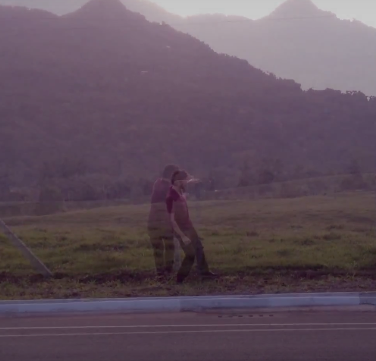
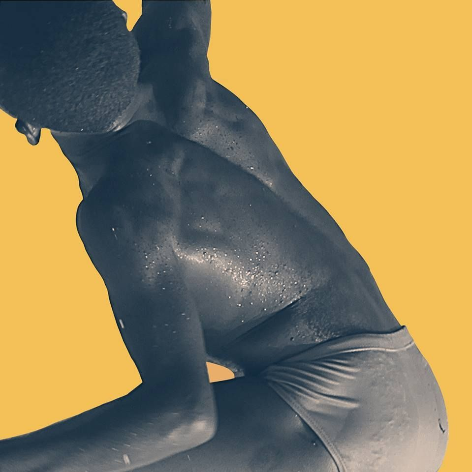
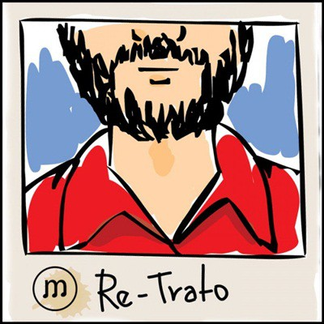
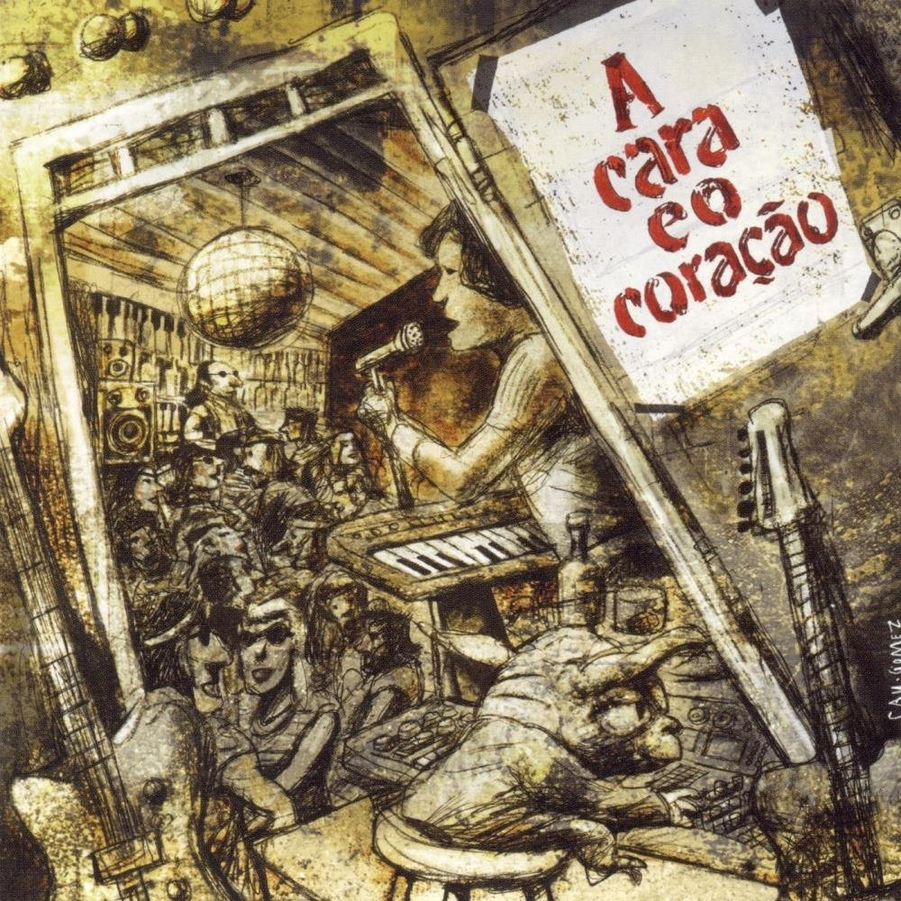

Music
Albums, single and production
| Jardim de Allah Elo Natural Production, Drums recording and Bass Soon |
| Pessoa (single) Perceba o Amor Bass Soon |
|  | Warnow Soundtrack - Dance improvisation composition Year: 2014 |
| Os Infames Uma ideia ou outra Bass Year: 2014 |
|  | Maglore Vamos pra rua Production, Vocal, Backing vocal and Bass Year: 2013 Rolling Stone paper |
| Armazém 1973 - Secos e Molhados Tribute (collectanea) (single) Fala Production, Recording, Mix, Master and Bass Year: 2013 O GLOBO paper |
|  | Re-Trato - Los Hermanos Tribute (collectanea) (single) O velho e o moço Production, Backing vocal and Bass Year: 2012 Rolling Stone paper |
|  | A cara e o coração - Guilherme Arantes Tribute (collectanea) (single) A cara e a coragem Production and Bass Year: 2011 |
| A cara e o coração - Guilherme Arantes Tribute (collectanea) (single) Brasília Production, Backing vocal and Bass Year: 2011 |
 |
Maglore Veroz Production, Vocal, Backing Vocal and Bass Year: 2011 |